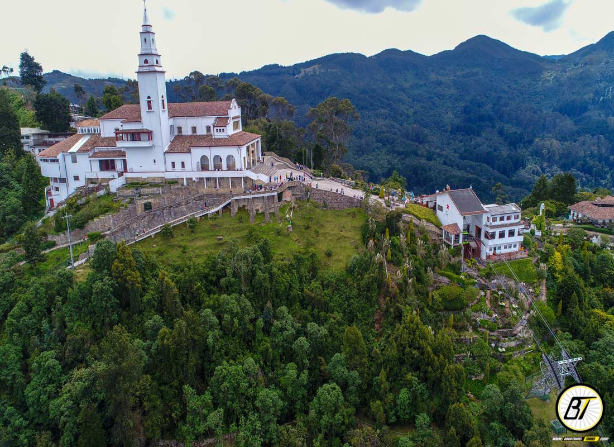
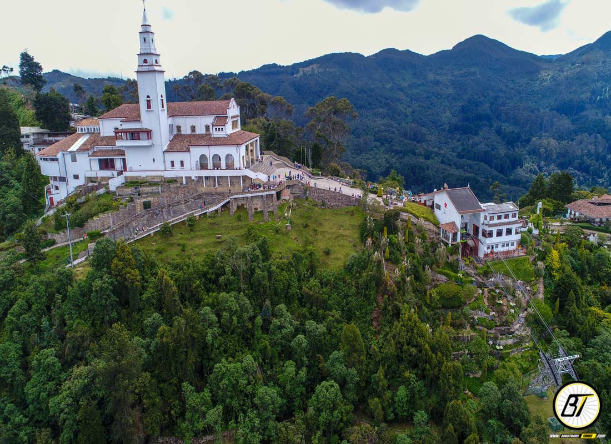
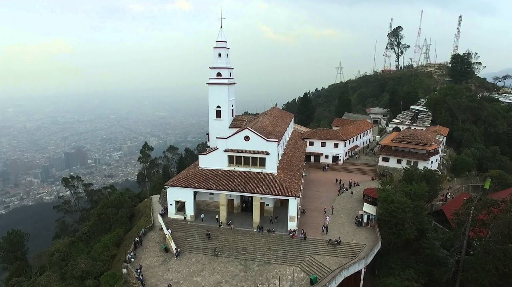
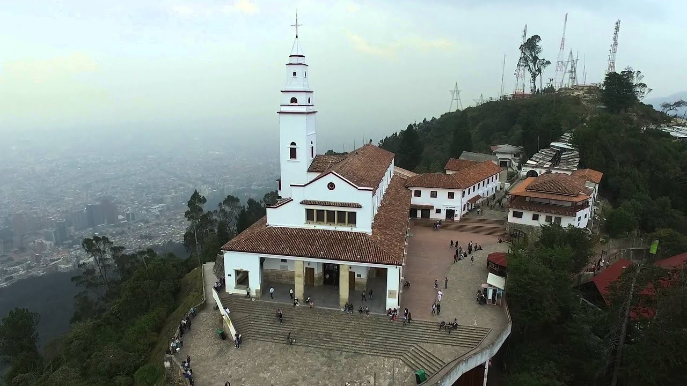

Monserrate es el cerro más icónico de Bogotá, ubicado a 3.152 metros sobre el nivel del mar. Es un destino turístico, religioso y natural con vistas panorámicas de la ciudad.
Ubicación
Dirección: Carrera 2 Este No. 21-48, Bogotá, Colombia.
Coordenadas: 4.605° N, 74.063° W
¿Cómo llegar?
- Teleférico: Trayecto de 4 minutos.
- Funicular: Trayecto de 8 minutos.
- A pie: 2.4 km de subida (aprox. 50 minutos).
Horarios
- Lunes a viernes: 6:30 a.m. - 11:30 p.m.
- Sábados: 6:30 a.m. - 4:30 p.m.
- Domingos y festivos: 5:30 a.m. - 5:00 p.m.
Precios (ida y regreso)
- Funicular o teleférico:
- 🔸 Adultos: $23.000 COP
- 🔸 Niños (4 a 12 años): $14.000 COP
- 🔸 Adultos mayores: $14.000 COP
 

 
